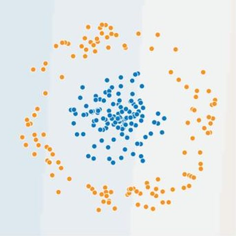
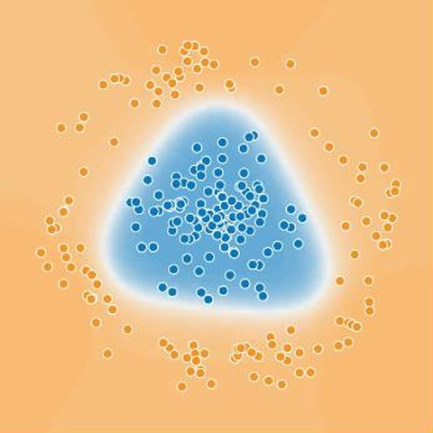
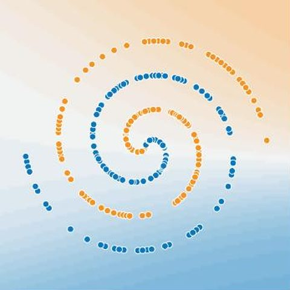
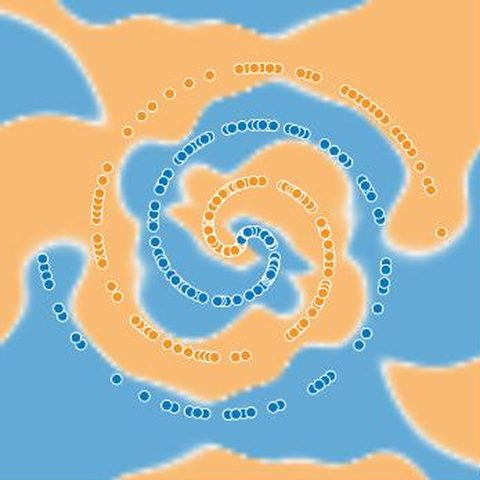
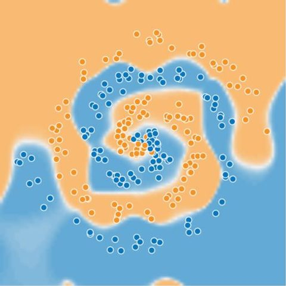

Inside a neural
network
Six components, one learning loop, and what changed when I adjusted them in TensorFlow Playground.
- 01Layers
- 02Neurons
- 03Weights & biases
- 04Activation functions
- 05Loss functions
- 06Optimization algorithms
How data flows through a neural network
Predictions move forward through the layers; the error moves backward to adjust every weight.
Layers organize the computation into stages
FirstInput layer
Receives the raw features, one node per feature. It has no weights of its own.
MiddleHidden layers
Transform the data step by step: early layers find simple patterns, later ones combine them.
LastOutput layer
Produces the answer: one value for regression or yes/no, one score per class.
More depth allows more complex boundaries but adds parameters, training time, and overfitting risk. The right depth depends on the pattern.

Only a straight-line boundary is possible. test 0.50

The boundary closes around the ring. test 0.02
TensorFlow Playground decision boundaries after 300 epochs. Points are training data; background color is the network’s prediction.
A neuron is a weighted vote followed by a decision rule
z = w1x1 + w2x2 + w3x3 + ba = f(z)
- 1Weigh each input by its connection weight.
- 2Sum the results and add a bias, which shifts the point where the neuron “switches on.”
- 3Activate: pass the sum z through an activation function to get the output a, which feeds the next layer.
The number of neurons in a layer is its width. Each neuron can detect one pattern, so wider layers detect more patterns at once. In the Playground, each neuron’s thumbnail shows the region it responds to; the final boundary blends them.
Weights and biases are what the network learns
Large positive: the input strongly pushes the neuron on.
Large negative: the input suppresses the neuron.
Near zero: the input is mostly ignored.
Line color and thickness follow the Playground convention: blue for positive, orange for negative, thicker for larger magnitude.
Every connection has a weight and every neuron has a bias. Together they are the model’s parameters. Training starts them at small random values and repeatedly nudges them to reduce the loss.
2 → 4 → 1: (2×4 + 4) + (4×1 + 1) = 17
4 → 8 → 8 → 6 → 1: 40 + 72 + 54 + 7 = 173
Weights between layers plus one bias per neuron. The second network is the one that solved the spiral. Large language models have billions of parameters.
Activation functions let the network bend its boundary
An activation function decides how strongly a neuron responds to its weighted sum. A nonlinear function is what lets layers build curves; without one, any stack of layers collapses into a single straight-line model.
One hidden layer of four neurons, 300 epochs, median test loss of five runs (lower is better).
Loss functions turn “how wrong?” into one number
Averages the squared gap between prediction and target. The usual choice for regression, such as prices or temperatures; large misses are penalized heavily.
The usual choice for classification. Loss rises steeply when the model is confident and wrong, which pushes it to fix its worst mistakes first.
The loss is the network’s score for each prediction, and the only signal the optimizer sees. Choosing it is part of defining the task.
Training loss measures fit on data the model learned from. Test loss measures performance on data it has never seen. A large gap means the model is memorizing rather than generalizing.
The Playground reports a squared-error loss on labels of −1 and +1, so a loss near 0.50 means the output is stuck near zero: the network is guessing.
Optimizers decide how to change each weight
| Learning rate | Median test loss | Range of 5 runs |
|---|---|---|
| 0.001 | 0.363 | 0.325–0.478 · too slow |
| 0.03 | 0.023 | 0.021–0.026 · stable |
| 3 | 0.102 | 0.025–0.182 · erratic |
Circle dataset, one hidden layer of four tanh neurons, 300 epochs.
w ← w − η · ∂L/∂w
Backpropagation uses the chain rule to find each weight’s gradient: how much it contributed to the loss. The optimizer steps each weight downhill; the learning rate η sets the step size.
Updates after each small batch of examples. The Playground uses mini-batch SGD.
Keeps a running direction to smooth out noisy steps.
Adapts the step size for each parameter; a common default for deep networks.
Six components, two roles: learned or chosen
| Component | Job in the network | Learned or chosen? | Where to change it in the Playground |
|---|---|---|---|
| 1Layers | Define the stages data passes through | Chosen architecture | + / − hidden layers |
| 2Neurons | Detect patterns; set each layer’s width | Chosen architecture | + / − neurons above each layer |
| 3Weights & biases | Scale and shift every signal | Learned during training | Shown as line color and thickness; hover to read |
| 4Activation | Add nonlinearity inside each neuron | Chosen per network | Activation menu |
| 5Loss | Score each prediction against the truth | Chosen to fit the task | Problem type; training and test loss readout |
| 6Optimizer | Turn gradients into weight updates | Chosen with its settings | Learning rate, batch size, regularization |
Parameters
Weights and biases. Training finds their values automatically by following the gradient of the loss.
Design choices & hyperparameters
Layers, neurons, activation, loss, optimizer, learning rate, and batch size. People set these, then compare results on test data.
What I observed in TensorFlow Playground
A straight line cannot enclose a ring.
test 0.50
One hidden layer closes the boundary.
test 0.02

Too little capacity; the boundary ignores the arms.
test 0.47

Depth plus useful features trace both arms.
test ≤ 0.01

Boundary bends around noisy points.
train 0.03 · test 0.10
Settings. Classification, seed 0.42, 50% train/test split, batch size 10, learning rate 0.03, tanh activation, no regularization unless noted. Circle runs: 300 epochs. Spiral runs: 1,000 epochs. Most values are medians of 3–5 runs; the images are one representative run. Orange and blue are the two classes; the background is the network’s prediction.
Depth vs. features. The 8-8-6 network with only x₁ and x₂ fit its training data (loss ≤ 0.008), but test loss varied from 0.03 to 0.09 between runs. Adding sin(x₁) and sin(x₂) as inputs made it reliable (0.001–0.010). Better features can matter as much as a bigger network.
Why visualizing a neural network matters
Why visualize
- It makes hidden computation visible.Each neuron’s pattern and each weight’s sign and size can be inspected instead of imagined.
- It turns settings into cause and effect.Change one setting and watch the boundary and the loss respond.
- It speeds up diagnosis.A flat loss means too little capacity, a train/test gap means overfitting, and a jumpy loss means the learning rate is too high.
- It helps explain models to others.A picture of the boundary communicates what a table of weights cannot.
Key insights from this exercise
- Nonlinearity is essential. Linear networks scored about 0.49–0.50 however many layers they had.
- Match capacity to the problem. Two neurons could not fit a spiral; three layers plus useful features could.
- Learning rate is the most sensitive dial. Too small stalled; too large was erratic.
- Judge models on test loss. Noisy data produced a threefold gap between training and test loss.
- Repeat experiments. Random starting weights change results, so a single run can mislead.
Sources
- Smilkov, D., & Carter, S. A Neural Network Playground. TensorFlow. playground.tensorflow.org. All experiments in this presentation were run here.
- Goodfellow, I., Bengio, Y., & Courville, A. (2016). Deep learning. MIT Press. deeplearningbook.org. Chapters 6 (feedforward networks) and 8 (optimization).
- Google for Developers. Machine Learning Crash Course: Neural networks. developers.google.com/machine-learning/crash-course/neural-networks
- Rumelhart, D. E., Hinton, G. E., & Williams, R. J. (1986). Learning representations by back-propagating errors. Nature, 323, 533–536.
- Nair, V., & Hinton, G. E. (2010). Rectified linear units improve restricted Boltzmann machines. Proceedings of ICML 2010.
- Kingma, D. P., & Ba, J. (2015). Adam: A method for stochastic optimization. arXiv:1412.6980
- PyTorch. torch.nn: Loss functions. docs.pytorch.org/docs/stable/nn.html
Diagrams and charts were created for this presentation. Playground screenshots show the output panel only, re-rendered at higher resolution. Experiments run October 31, 2026.